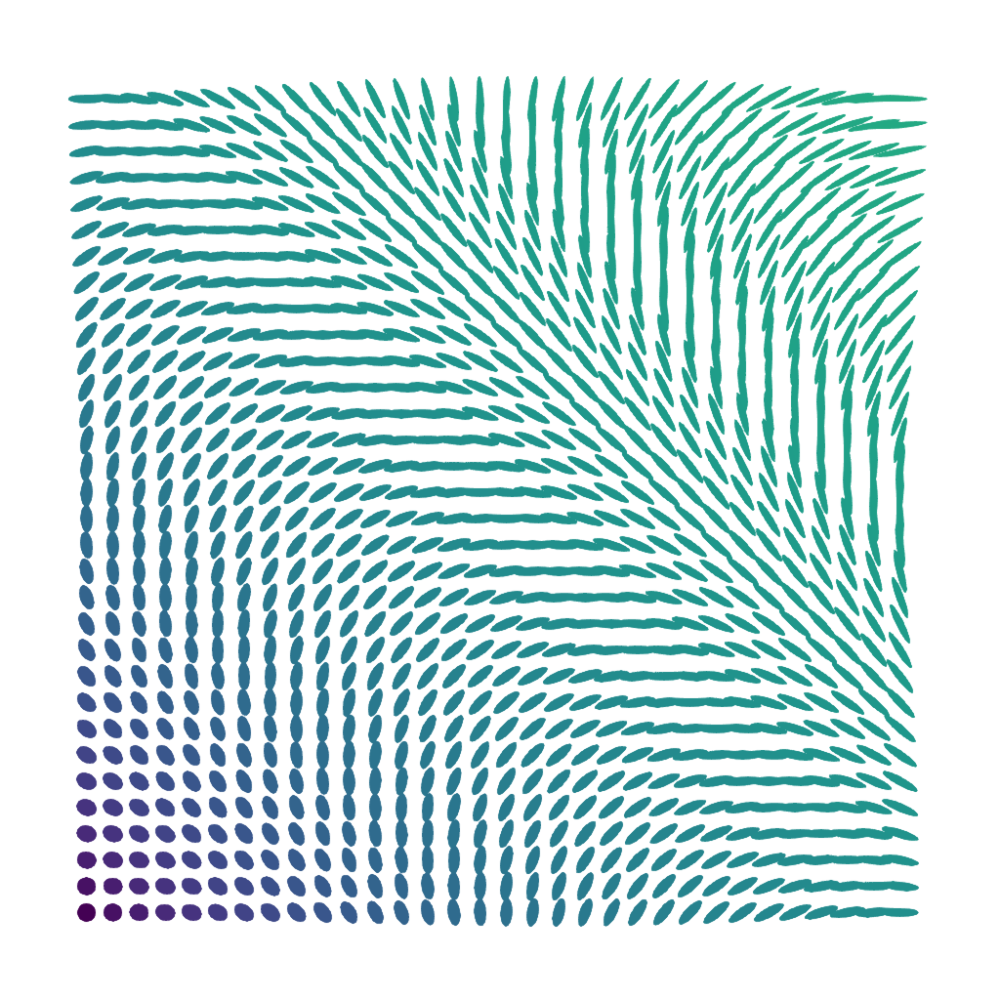
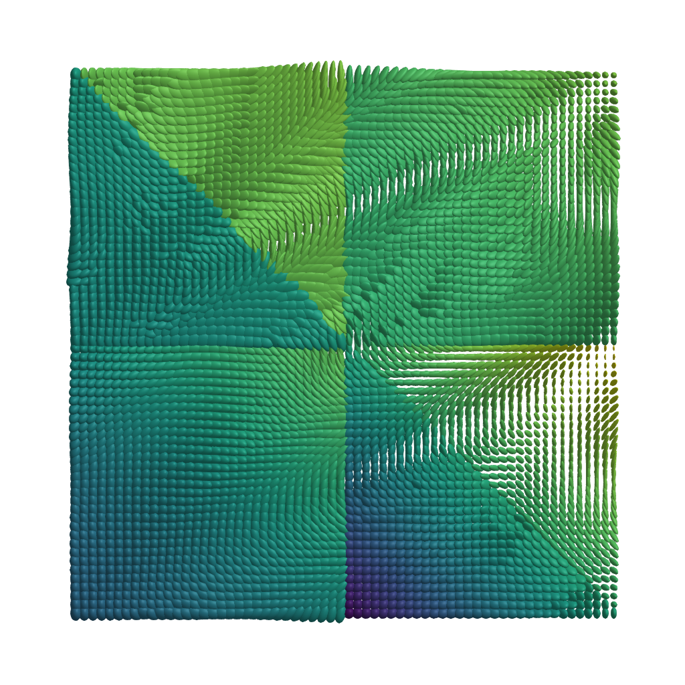

Plotting data of symmetric Positive Definnite Matrices
For signals or images of SymmetricPositiveDefinite(n) can be plotted for the cases n=2,3 as Ellipses and Ellipsoids, respectively.
Both follow the same idea, that a data point $p ∈ \mathcal P(n)$$ the Eigenvalues $λ_1,…,λ_n$ are all positive and the since $p$ is diagonalizable the corresponding Eigenvectors $v_1,…v_n$ form a basis of $ℝ^n$ they can serve as the principal axes with the eigenvalues as axis lengths.
Plotting Ellipses
using GLMakie, LinearAlgebra, ManifoldMakie, Manifolds
R(α) = [cos(α) -sin(α); sin(α) cos(α)]
n = 32
M = SymmetricPositiveDefinite(2)
data = [ R(π*(x+y))' * diagm([1.0 + x + y, 1.0/(1.0 + x + y)]) * R(π*(x+y)) for x ∈ range(0,1,n), y ∈ range(0,1,n)]
image(M, data)
Plotting Ellipsoids
When the scale is not so anisotropic, we can also set the color scale ourselves. Here the maximum anisotropy index is about 0.64 so to color this a bit better we set the range
Since the Eigenvalues here would even reach up to 4.7 we use a relative scaling. With the default scaling of 1.0 none of the ellipsoids would ever touch. Here, we can scale that a bit up to obtain a slightly denser overall impression.
using GLMakie, LinearAlgebra, ManifoldMakie, Manifolds, ManoptExamples
M = SymmetricPositiveDefinite(3)
data = ManoptExamples.artificial_SPD_image(64);
image(M, data; scale_ev = 1.75, scale_mode = :relative, colorrange = [0,0.64])
Function Reference
ManifoldMakie.symmetricpositivedefinitedataimage — Function
symmetricpositivedefinitedataimage(M::SymmetricPositiveDefinite, img)
symmetricpositivedefinitedataimage(M::SymmetricPositiveDefinite, x, y, img)or as shortcut also
image(M::SymmetricPositiveDefinite, img)
image(M::SymmetricPositiveDefinite, x, y, img)Plot image data with values on the SymmetricPositiveDefinite(n), $n=2,3$ manifold as ellipses or ellipsoids, respectively.
As the colour scale we use the Riemannian anisotropy index from Moakher and Batchelor (2006),
\[\operatorname{GA}(p) =\frac{\mathrm{A}_{\mathrm{R}}(P)}{1+\mathrm{A}_{\mathrm{R}}(p)}, \quad\text{where}\quad \mathrm{A}_{\mathrm{R}}(p) = \displaystyle\sqrt{ \frac{n-1}{n}\displaystyle\sum_{i=1}^n \log^2(λ_i) - \frac{2}{n}\displaystyle\sum_{1≤i<j≤n} \log(λ_i)\log(λ_j)},\]
and $λ_i$, $i=1,…,n$ are the eigenvalues of the symmetric positive definite matrix $p$.
Plot type
The plot type alias for the symmetricpositivedefinitedataimage function is SymmetricPositiveDefiniteDataImage.
Attributes
alpha = 1.0 — The alpha value of the colormap or color attribute. Multiple alphas like in plot(alpha=0.2, color=(:red, 0.5)), will get multiplied.
clip_planes = @inherit clip_planes automatic — Clip planes offer a way to do clipping in 3D space. You can set a Vector of up to 8 Plane3f planes here, behind which plots will be clipped (i.e. become invisible). By default clip planes are inherited from the parent plot or scene. You can remove parent clip_planes by passing Plane3f[].
colormap = :viridis — Sets the colormap that is sampled for numeric colors. PlotUtils.cgrad(...), Makie.Reverse(any_colormap) can be used as well, or any symbol from ColorBrewer or PlotUtils. To see all available color gradients, you can call Makie.available_gradients().
colorrange = [0, 1] — The values representing the start and end points of colormap.
colorscale = identity — The color transform function. Can be any function, but only works well together with Colorbar for identity, log, log2, log10, sqrt, logit, Makie.pseudolog10, Makie.Symlog10, Makie.AsinhScale, Makie.SinhScale, Makie.LogScale, Makie.LuptonAsinhScale, and Makie.PowerScale.
depth_shift = 0.0 — Adjusts the depth value of a plot after all other transformations, i.e. in clip space, where -1 <= depth <= 1. This only applies to GLMakie and WGLMakie and can be used to adjust render order (like a tunable overdraw).
fxaa = true — Adjusts whether the plot is rendered with fxaa (fast approximate anti-aliasing, GLMakie only). Note that some plots implement a better native anti-aliasing solution (scatter, text, lines). For them fxaa = true generally lowers quality. Plots that show smoothly interpolated data (e.g. image, surface) may also degrade in quality as fxaa = true can cause blurring.
highclip = automatic — The color for any value above the colorrange.
inspectable = @inherit inspectable — Sets whether this plot should be seen by DataInspector. The default depends on the theme of the parent scene.
inspector_clear = automatic — Sets a callback function (inspector, plot) -> ... for cleaning up custom indicators in DataInspector.
inspector_hover = automatic — Sets a callback function (inspector, plot, index) -> ... which replaces the default show_data methods.
inspector_label = automatic — Sets a callback function (plot, index, position) -> string which replaces the default label generated by DataInspector.
lowclip = automatic — The color for any value below the colorrange.
model = automatic — Sets a model matrix for the plot. This overrides adjustments made with translate!, rotate! and scale!.
nan_color = :transparent — The color for NaN values.
overdraw = false — Controls if the plot will draw over other plots. This specifically means ignoring depth checks in GL backends
scale_ev = 1.0 — scale eigenvalues globally
scale_mode = :absolute — scale :absolute or :relative, i.e. after normalizing the largest Eigenvalue to be 1
space = :data — Sets the transformation space for box encompassing the plot. See Makie.spaces() for possible inputs.
ssao = false — Adjusts whether the plot is rendered with ssao (screen space ambient occlusion). Note that this only makes sense in 3D plots and is only applicable with fxaa = true.
transformation = :automatic — Controls the inheritance or directly sets the transformations of a plot. Transformations include the transform function and model matrix as generated by translate!(...), scale!(...) and rotate!(...). They can be set directly by passing a Transformation() object or inherited from the parent plot or scene. Inheritance options include:
:automatic: Inherit transformations if the parent and childspaceis compatible:inherit: Inherit transformations:inherit_model: Inherit only model transformations:inherit_transform_func: Inherit only the transform function:nothing: Inherit neither, fully disconnecting the child's transformations from the parent
Another option is to pass arguments to the transform!() function which then get applied to the plot. For example transformation = (:xz, 1.0) which rotates the xy plane to the xz plane and translates by 1.0. For this inheritance defaults to :automatic but can also be set through e.g. (:nothing, (:xz, 1.0)).
transparency = false — Adjusts how the plot deals with transparency. In GLMakie transparency = true results in using Order Independent Transparency.
visible = true — Controls whether the plot gets rendered or not.
Literature
- [MB06]
- M. Moakher and P. G. Batchelor. Symmetric Positive-Definite Matrices: From Geometry to Applications and Visualization. In: Visualization and Processing of Tensor Fields, edited by J. Weickert and H. Hagen (Springer Berlin Heidelberg, Berlin, Heidelberg, 2006); pp. 285–298.